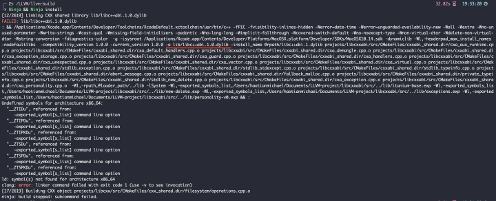
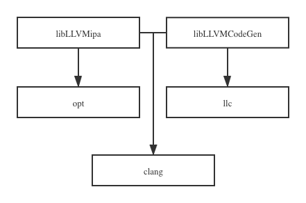

Abstract
LLVM，这个星球最牛逼的编译器。
其核心设计理念就是统一的底层中间表达以及模块化的软件工程化方法。LLVM采用了
前端-优化器-后端的组织形式，只是不同的前端和后端都采用统一的底层中间表示格式（LLVM IR）来最大可能复用优化器的代码。在Chris Lattner将其开源后，LLVM逐渐发展成为了成熟的编译框架，具有大量库和编译链工具。
我使用的平台是
macOS Mojave 10.14，在编译的时候要注意版本是否兼容。一般系统会通过打印二进制文件名称和无法加载的动态库的名称来发现链接错误。当屏幕上打印动态库名称时要予以注意，这说明系统动态链接器和加载器无法加载该库，因为该程序与当前系统不兼容。
我编译
LLVM 10.0.0的时候出错如下：

后来发现这个版本的
Xcode工具链最高只支持LLVM 9.0.0版本，然后换了版本最后编译成功。
BUILD
| Subproject Deployed On My System | Note |
|---|---|
| llvm-core | modern source- and target-independent optimizer, along with code generation support for many popular CPUs |
| Clang | "LLVM native" C/C++/Objective-C compiler front-end |
| LLDB | native debugger |
| LLD | native linker |
| libcxx/libcxxabi | standard conformant and high-performance implementation of the C++ Standard Library, |
| compiler-rt | highly tuned implementations of the low-level code generator support routines and implementations of run-time libraries |
llvm
以上的
subproject通过以下编译方式完成部署：
1 | //ought to download source of subprojects to local, besides |
libcxx/libcxxabi
这里理清楚一个概念：
glic是linux最重要的运行库，其实现最底层的API供其他库使用比如malloc/printf等。libstdc++是一个C++标准库，如果跑在linux则依赖Glibclibcxx是LLVM专门开发的一个代替libstdc++的c++标准库compiler-rt是LLVM开发来替代libgcc,主要用于为硬件不支持的低级功能提供特定于目标的支持
clang++构建可执行文件的时候使用libcxx或者libclc(OpenCL运行时库)。其中libcxx实现由库本身和一个低级函数层libcxxabi组成，这个函数层用来处理异常和运行时类型信息(RTTI)等功能，这种分离式设计使得libcxxabi更容易移植。
1 | git clone https://github.com/llvm/llvm-project.git |
warning
其中
llvm和libcxx我是分开编译的，而且编译目录和安装目录都是指定的目录，默认很可能会安装到系统路径下，从而带来错误。
~/Document/LLVM9.0.0/
llvm//llvm源代码libcxx//libcxx源代码/LLVM/
llvm-build//llvm编译路径llvm-install//llvm安装路径/LLVM/
libcxx-build//libcxx编译路径libcxx-install//libcxx安装路径
Features
核心设计
LLVM中最核心的就是LLVM-IR：
SSA表示和允许快速优化的无限寄存器- 通过将整个程序存储在磁盘IR表示中，实现便捷的链接时优化
当然
LLVM不仅仅只有一种中间表示形式：
- 将
C或C++转换为LLVM-IR的时候，Clang将使用抽象语法树AST结构在内存中表示程序 - 将
LLVM-IR转换为特定于机器的汇编语言的时候，LLVM首先将程序转换为有向无环图DAG格式以便进行指令选择，然后将其转换回三地址表示以进行指令调度 - 为了实现汇编器和链接器，
LLVM使用第四种中间数据结构MCModule在对象文件的上下文中保存成程序表示
在整个框架中，"库"是一个很核心的概念。很多二进制工具都可以直接调用库来实现。而Clang作为编译驱动程序则可以通过链接小工具的库来实现其功能——代码重用。故
clang在二进制文件中是最大的，因为它链接并利用了整个LLVM生态系统。而开发者一般都是将LLVM各个组件看出是库。

编译流程
clang
clang作为编译器驱动程序隐式的调用从前端到链接器的所有工具。整个过程都是在内存中完成的，并不会将中间文件输出到磁盘中。
1 | clang hello.c -o hello |
独立工具
LLVM独立工具会将中间文件输出到磁盘上。
| Tools | Notes |
|---|---|
opt |
在IR级别对程序进行优化的工具，输入必须是LLVM位码文件(编码的LLVM-IR)，并且生成的输出文件必须具有相同的类型 |
llc |
通过特定后端将LLVM位码转换为目标机器汇编语言文件或目标文件的工具，可以通过传递参数来选择优化级别，打开调试选项以及启用或禁用特定与目标的优化 |
llvm-mc |
能够汇编指令并生成诸如ELF,Mach-O,PE等对香格式的可执行目标文件，也可以反汇编相同的对象，从而转储这些指令的汇编信息和内部LLVM机器指令数据结构 |
lli |
是LLVM IP的解释器和JIT编译器 |
llvm-link |
将几个LLVM位码链接在一起，以产生一个包含所有输入的LLVM位码 |
llvm-as |
将人工可读的LLVM-IR文件(称为LLVM汇编码)转换为LLVM位码 |
llvm-dis |
将LLVM位码解码成为LLVM汇编码 |
-emit-llvm
- LLVM位码： 编码的
LLVM-IR - LLVM汇编码： 人工可读的
LLVM-IR
假设
main.c和sum.c:
1 | $ vim main.c |
如果直接使用编译器驱动程序
Clang的话：
1 | clang main.c sum.c -o sum |
如果使用独立工具的话:
1 | clang -emit-llvm -c main.c -o main.bc |
其中
-emit-llvm编译选项可以让clang根据-c或者-S参数来生成LLVM位码还是LLVM汇编码。
-c生成LLVM位码-c -S生成LLVM汇编码
1 | clang -emit-llvm -c -S main.c -o main.ll |
llc
该工具从每个LLVM位码文件内生成特定于目标的可重定位目标文件，并通过将其链接到系统链接器来构建可执行文件
1 | llc -filetype=obj main.bc -o main.o |
llvm-link
该工具将多个LLVM位码文件连接成为最终的LLVM位码文件
1 | llvm-link main.bc sum.bc -o sum.linked.bc |
可以看到所有的二进制工具都围绕几个中间形式的表示展开，这些中间表示在编译过程中占很重要的作用。